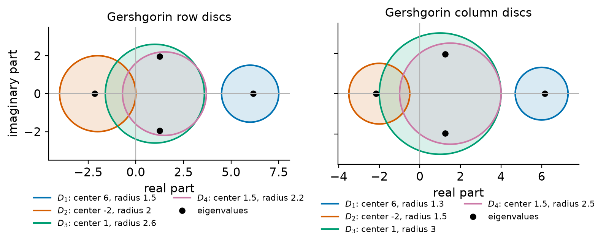
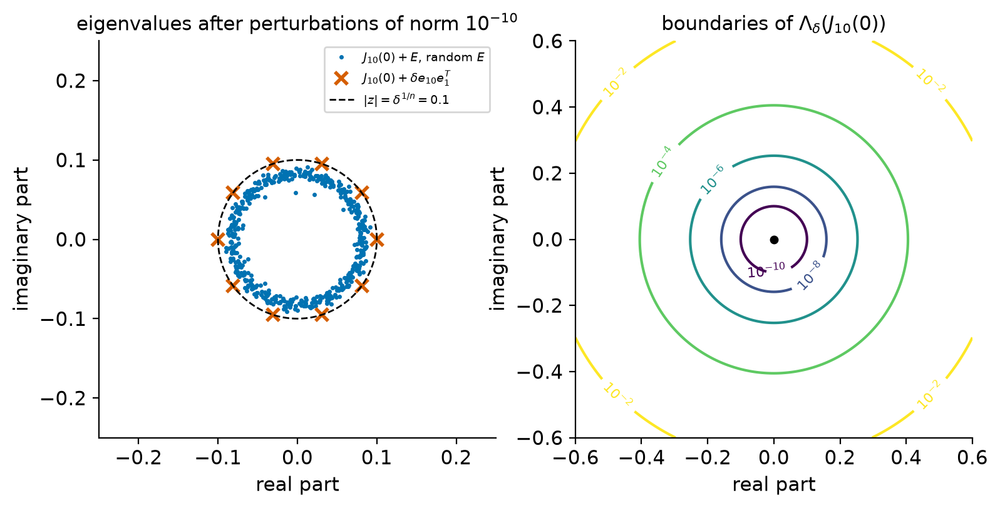
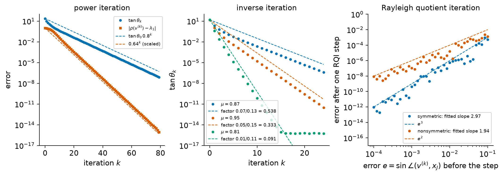

9. Eigenvalues: theory and vector iterations#
Eigenvalues describe what a linear map does when it is applied over and over again. They decide whether the solution of \(\dot x = Ax\) decays or grows, at which frequencies a structure vibrates, which directions carry the most variance in a data set, and how fast an iterative method for a linear system converges. They also appeared, in disguise, in every earlier chapter: the 2-norm of a matrix is the square root of the largest eigenvalue of \(A^TA\), and the singular values of Chapter 2 are square roots of eigenvalues.
Computing eigenvalues is different in kind from solving linear systems. Gaussian elimination produces the exact solution of \(Ax = b\) after finitely many operations, apart from rounding. No algorithm can do this for the eigenvalues of general matrices of order five or more, because eigenvalues are roots of polynomials (Section 9.2). Every eigenvalue solver for general matrices is therefore iterative, and the questions that matter are how fast it converges and how accurate the limit is. This chapter develops the theory needed to answer both. The first half is structural and perturbation theory: multiplicities and diagonalizability, the Schur decomposition, normal and symmetric matrices, and the bounds of Gershgorin, Bauer–Fike, Weyl and Davis–Kahan that tell us how far eigenvalues and eigenvectors move when the matrix is perturbed. The second half studies the vector iterations: power iteration, inverse iteration, Rayleigh quotient iteration and simultaneous iteration. They are important in their own right for large problems and are the building blocks of the QR algorithm of Chapter 10.
Learning objectives
After working through this chapter you should be able to:
compute algebraic and geometric multiplicities, decide whether a matrix is diagonalizable, and explain why defective matrices are delicate;
explain why no finite algorithm can compute eigenvalues in general, and why the characteristic polynomial is a poor computational route;
state and prove the Schur decomposition and the spectral theorem, and read eigenvalues correctly from a real Schur form;
apply the theorems of Gershgorin, Bauer–Fike and Weyl, compute the condition number \(1/|y^*x|\) of a simple eigenvalue, and explain how gaps and non-normality govern the sensitivity of eigenvectors and eigenvalues;
interpret the residual of an approximate eigenpair as a backward error and use it as a stopping criterion;
prove the convergence rates of power iteration, inverse iteration and Rayleigh quotient iteration, and measure them numerically;
describe simultaneous iteration and its connection to the QR algorithm.
9.1. Eigenvalues, eigenvectors, and multiplicity#
9.1.1. Definitions#
Definition 9.1 (Eigenvalues and eigenvectors)
Let \(A\in\C^{n\times n}\). A scalar \(\lambda\in\C\) is an eigenvalue of \(A\) and a nonzero vector \(x\in\C^n\) is a corresponding (right) eigenvector if
The pair \((\lambda,x)\) is an eigenpair. A nonzero \(y\in\C^n\) with \(y^*A = \lambda y^*\) is a left eigenvector; equivalently \(A^*y = \bar\lambda y\). The set \(\Lambda(A)\) of all eigenvalues is the spectrum of \(A\). The characteristic polynomial is
a monic polynomial of degree \(n\) whose roots are exactly the eigenvalues, because \(\lambda\in\Lambda(A)\) if and only if \(\lambda I - A\) is singular.
A real matrix can have complex eigenvalues, which then occur in complex conjugate pairs because \(p_A\) has real coefficients. Two matrices \(A\) and \(B = X^{-1}AX\) with \(X\) nonsingular are similar. Similar matrices have the same characteristic polynomial, since \(\det(zI - X^{-1}AX) = \det\big(X^{-1}(zI-A)X\big) = \det(zI - A)\), and if \(Ax = \lambda x\) then \(B(X^{-1}x) = \lambda X^{-1}x\). Every eigenvalue algorithm in this course applies similarity transformations, preferably unitary ones, until the eigenvalues can be read off.
Definition 9.2 (Algebraic and geometric multiplicity)
The algebraic multiplicity \(m_a(\lambda)\) of an eigenvalue \(\lambda\) is its multiplicity as a root of \(p_A\). The geometric multiplicity \(m_g(\lambda) = \dim\nullsp(A - \lambda I)\) is the number of linearly independent eigenvectors for \(\lambda\). An eigenvalue with \(m_a(\lambda)=1\) is simple.
Proposition 9.1 (Geometric multiplicity is at most algebraic multiplicity)
For every eigenvalue \(\lambda\) of \(A\in\C^{n\times n}\), \(1\le m_g(\lambda)\le m_a(\lambda)\).
Proof. Let \(g = m_g(\lambda)\), let the columns of \(X_1\in\C^{n\times g}\) be a basis of \(\nullsp(A-\lambda I)\), and extend them to a basis \(X = [X_1, X_2]\) of \(\C^n\). Since \(AX_1 = \lambda X_1\),
for some \(B\) and \(C\). By similarity invariance \(p_A(z) = (z-\lambda)^g\det(zI - C)\), so \(\lambda\) is a root of multiplicity at least \(g\).
9.1.2. Diagonalizability and defective matrices#
Theorem 9.1 (Diagonalizability)
For \(A\in\C^{n\times n}\) the following are equivalent:
\(A = X\Lambda X^{-1}\) with \(X\) nonsingular and \(\Lambda\) diagonal;
\(A\) has \(n\) linearly independent eigenvectors;
\(m_g(\lambda) = m_a(\lambda)\) for every eigenvalue \(\lambda\).
In particular, a matrix with \(n\) distinct eigenvalues is diagonalizable.
Proof. (1)\(\Leftrightarrow\)(2): \(AX = X\Lambda\) says column by column that \(Ax_j = \lambda_j x_j\), and \(X\) is nonsingular exactly when its columns are linearly independent.
(2)\(\Leftrightarrow\)(3): We first show that eigenvectors belonging to distinct eigenvalues are linearly independent. Suppose \(\sum_{i=1}^k w_i = 0\), where each \(w_i\neq0\) lies in the eigenspace of \(\lambda_i\), the \(\lambda_i\) are distinct, and \(k\ge1\) is as small as possible. Then \(k\ge2\), and applying \(A-\lambda_1I\) gives \(\sum_{i=2}^k(\lambda_i-\lambda_1)w_i = 0\), a shorter relation of the same kind, a contradiction. Consequently the union of bases of all eigenspaces is linearly independent and has \(\sum_\lambda m_g(\lambda)\) elements. Since \(\sum_\lambda m_a(\lambda) = n\) and \(m_g\le m_a\) by Proposition 9.1, there are \(n\) independent eigenvectors if and only if \(m_g(\lambda) = m_a(\lambda)\) for every \(\lambda\). If all \(n\) eigenvalues are distinct, \(1\le m_g(\lambda)\le m_a(\lambda) = 1\).
A matrix that is not diagonalizable is called defective. The model example is the Jordan block.
Example 9.1 (A Jordan block)
The Jordan block of order \(n\) with eigenvalue \(\lambda\) is
where \(N\) has ones on the first superdiagonal. Its characteristic polynomial is \((z-\lambda)^n\), so \(m_a(\lambda) = n\). But \(\nullsp(J_n(\lambda)-\lambda I) = \nullsp(N) = \Span\{e_1\}\), so \(m_g(\lambda) = 1\). For \(n\ge2\) the block is defective: it has only one eigenvector direction. The matrix \(\begin{bmatrix}1&1\\0&1\end{bmatrix}\) is the smallest example; the matrix \(\begin{bmatrix}1&0\\0&1\end{bmatrix}\) has the same eigenvalues and is diagonal.
Every square matrix is similar to a block diagonal matrix of Jordan blocks, its Jordan canonical form [Horn and Johnson, 2013] (Chapter 3). The Jordan form is indispensable in theory and useless in floating-point computation: an arbitrarily small perturbation can change it completely (the perturbed Jordan block of Example 9.7 has \(n\) distinct eigenvalues and is diagonalizable), so it cannot be computed stably. The Schur decomposition of Section 9.3 replaces it in practice.
Left and right eigenvectors are linked by a biorthogonality relation that we use repeatedly: if \(y_i^*A = \lambda_iy_i^*\) and \(Ax_j = \lambda_jx_j\) with \(\lambda_i\ne\lambda_j\), then
If \(A = X\Lambda X^{-1}\), the rows of \(X^{-1}\) are left eigenvectors, because \(X^{-1}A = \Lambda X^{-1}\), and they are normalized so that the \(i\)th row times the \(i\)th column of \(X\) is one.
Check your understanding
Is \(A = \begin{bmatrix}2&1\\0&3\end{bmatrix}\) diagonalizable? Give a right and a left eigenvector for each eigenvalue and check (9.3).
Answer. Yes: the eigenvalues \(2\) and \(3\) are distinct. Right eigenvectors are \(x_1 = (1,0)^T\) for \(2\) and \(x_2 = (1,1)^T\) for \(3\). Left eigenvectors solve \(y^*(A - \lambda I) = 0\): \(y_1 = (1,-1)^T\) for \(2\) and \(y_2 = (0,1)^T\) for \(3\). Indeed \(y_1^*x_2 = 0\) and \(y_2^*x_1 = 0\), while \(y_1^*x_1 = 1\) and \(y_2^*x_2 = 1\) are nonzero.
9.2. Why eigenvalue algorithms must iterate#
9.2.1. Polynomials are eigenvalue problems#
Computing eigenvalues is at least as hard as computing roots of polynomials, because every monic polynomial is the characteristic polynomial of some matrix.
Proposition 9.2 (Companion matrices)
Let \(p(z) = z^n + a_{n-1}z^{n-1} + \dots + a_1z + a_0\). The companion matrix
satisfies \(\det(zI - C) = p(z)\). Every root \(z\) of \(p\) is an eigenvalue of \(C\), with left eigenvector \(w = (1, \bar z, \bar z^2,\dots,\bar z^{n-1})^T\).
Proof. For a root \(z\), the row vector \(w^* = (1, z, \dots, z^{n-1})\) satisfies \((w^*C)_j = z^j = z\,w^*_j\) for \(j<n\), and \((w^*C)_n = -\sum_{i=0}^{n-1}a_iz^i = z^n = z\,w^*_n\) because \(p(z) = 0\). So \(w^*C = zw^*\) and \(z\) is an eigenvalue. The identity \(\det(zI - C) = p(z)\) follows by cofactor expansion (Exercise 9.2).
This is not just a theoretical remark: numpy.roots computes the roots of a
polynomial as the eigenvalues of its companion matrix. Combined with the
following classical theorem, it shows that eigenvalue algorithms cannot be
finite.
Theorem 9.2 (Abel–Ruffini)
For every \(n\ge5\) there are polynomials of degree \(n\) with rational coefficients whose roots cannot be expressed in terms of the coefficients by finitely many additions, subtractions, multiplications, divisions and extractions of \(k\)th roots.
We do not prove this theorem of Galois theory; see Trefethen and Bau [1997] (Lecture 25) for its consequence for eigenvalue computation. Suppose an algorithm computed the exact eigenvalues of every matrix of order \(n\ge5\) with finitely many arithmetic operations and root extractions. Applied to companion matrices, it would give a formula in radicals for the roots of every polynomial of degree \(n\), contradicting Theorem 9.2. Hence every eigenvalue solver for general matrices is iterative: it produces a sequence that converges to the eigenvalues, and it stops when the error is below a tolerance. The practical distinction between “direct” and “iterative” is then one of speed. The QR algorithm of Chapter 10 converges so fast that, in practice, the work is a fixed multiple of \(n^3\), as for a direct method.
9.2.2. The characteristic polynomial is the wrong route#
The reverse reduction, computing the coefficients of \(p_A\) and then its roots, is a bad algorithm even though it is mathematically correct. The reason is conditioning. Let \(z\) be a simple root of \(p\) and let the coefficients be perturbed to give \(p + \Delta p\). To first order the root moves to \(z + \Delta z\) with \(p(z+\Delta z) + \Delta p(z+\Delta z) = 0\), that is, \(p'(z)\Delta z + \Delta p(z)\approx 0\), so
where \(a_n = 1\). The factor on the right is a condition number of the root that measures its absolute change caused by relative changes of the coefficients; dividing it by \(|z|\) gives the fully relative condition number. The conditioning of polynomial roots with respect to the coefficients is discussed in Trefethen and Bau [1997] (Lecture 12).
Example 9.2 (Wilkinson’s polynomial)
Let \(p(z) = \prod_{j=1}^{20}(z - j)\), the characteristic polynomial of
\(D = \diag(1,2,\dots,20)\). Its coefficients alternate in sign, so
\(\sum_k|a_k||z|^k = \prod_{j=1}^{20}(z+j)\) for \(z>0\), and
\(|p'(z)| = \prod_{j\ne z}|z-j|\) at a root \(z\). For the roots \(z = 14\) and
\(z = 15\) the factor in (9.4) is about
\(7.6\times10^{14}\) (the fully relative condition numbers are about
\(5\times10^{13}\)). Relative changes of the coefficients of the order of the
unit roundoff \(u\approx1.1\times10^{-16}\), which are unavoidable when the
coefficients (integers of magnitude up to about \(1.4\times10^{19}\), far
beyond \(2^{53}\)) are stored in double precision, can therefore move these
roots by about \(0.08\). Indeed,
numpy.roots applied to the coefficients computed by numpy.poly returns
roots with errors up to about \(0.09\).
The eigenvalues themselves are perfectly conditioned. If \(Q\) is orthogonal, \(A = QDQ^T\) is symmetric with eigenvalues \(1,\dots,20\), and by Weyl’s theorem (Theorem 9.10) a perturbation \(E\) moves each eigenvalue by at most \(\|E\|_2\). A symmetric eigensolver applied to \(A\) returns all twenty eigenvalues with errors of order \(10^{-14}\). The ill-conditioning was introduced by the change of representation, not by the problem.
Warning
“Eigenvalues are the roots of the characteristic polynomial, so we should
compute the polynomial and find its roots.” The first half is a definition;
the second half is a numerically unstable algorithm. Eigenvalue algorithms
work with the matrix and similarity transformations. Robust polynomial root
finders such as numpy.roots do the opposite: they build a companion matrix
and compute its eigenvalues.
9.3. The Schur decomposition and normal matrices#
9.3.1. The Schur decomposition#
Diagonalization by a similarity \(X\) may be impossible (defective matrices) or badly conditioned (\(\kappa(X)\) large). Unitary similarities are perfectly conditioned, and they can always reduce a matrix to triangular form.
Theorem 9.3 (Schur decomposition)
Every \(A\in\C^{n\times n}\) can be written as
where \(Q\in\C^{n\times n}\) is unitary and \(T\) is upper triangular. The diagonal entries of \(T\) are the eigenvalues of \(A\), and they can be made to appear in any prescribed order.
Proof. We use induction on \(n\); the case \(n=1\) is trivial. Let \(n>1\) and let \(\lambda_1\) be an eigenvalue of \(A\) (the characteristic polynomial has a root by the fundamental theorem of algebra), with eigenvector \(q_1\), \(\|q_1\|_2 = 1\). Extend \(q_1\) to a unitary matrix \(U = [q_1, W]\), for example with a Householder reflector that maps \(e_1\) to a multiple of \(q_1\) (Section 1.2.2, with complex arithmetic). Then
because \(W^*Aq_1 = \lambda_1W^*q_1 = 0\). By the induction hypothesis \(W^*AW = \tilde Q\tilde T\tilde Q^*\) with \(\tilde Q\) unitary and \(\tilde T\) upper triangular. Then \(Q = U\begin{bmatrix}1&0\\0&\tilde Q\end{bmatrix}\) is unitary and
is upper triangular. Since \(A\) and \(T\) are similar, \(p_A(z) = \prod_i(z - t_{ii})\), so the diagonal of \(T\) lists the eigenvalues with their algebraic multiplicities. The eigenvalue \(\lambda_1\) chosen in the first step was arbitrary, and so is the order in which the induction picks the remaining ones.
The columns \(q_1,\dots,q_n\) of \(Q\) are the Schur vectors. Comparing the first \(k\) columns of \(AQ = QT\) gives \(AQ_k = Q_kT_{11}\), where \(Q_k\) holds the first \(k\) columns and \(T_{11}\) is the leading \(k\times k\) block of \(T\): the span of the first \(k\) Schur vectors is an invariant subspace of \(A\). Only \(q_1\) is in general an eigenvector. The QR algorithm of Chapter 10 computes a Schur decomposition; this is why the decomposition matters for computation and the Jordan form does not.
For a real matrix one would like to avoid complex arithmetic. Complex eigenvalues come in conjugate pairs, and each pair can be kept in a real \(2\times2\) block.
Theorem 9.4 (Real Schur decomposition)
Every \(A\in\R^{n\times n}\) can be written as \(A = QTQ^T\) with \(Q\) real orthogonal and \(T\) real and block upper triangular, with diagonal blocks of order one or two. Each \(1\times1\) block is a real eigenvalue, and each \(2\times2\) block has a pair of complex conjugate eigenvalues.
For a proof see Golub and Van Loan [2013] (Section 7.4). The LAPACK routines behind
scipy.linalg.schur return the \(2\times2\) blocks in a standardized form with
equal diagonal entries.
Warning
The diagonal of a real Schur form \(T\) does not list the eigenvalues when \(T\) has \(2\times2\) blocks. A block \(\begin{bmatrix}a&b\\c&d\end{bmatrix}\) has the eigenvalues
which for a block with complex eigenvalues are \(\alpha\pm i\beta\) with
\(\alpha = (a+d)/2\) and \(\beta = \sqrt{-((a-d)/2)^2 - bc}\). Its diagonal
entries \(a\) and \(d\) are only related real numbers (in the standardized form
both equal the real part \(\alpha\)). Printing np.diag(T) as “the
eigenvalues” is a common mistake. Use the formula above, the output
output='complex' of scipy.linalg.schur, or scipy.linalg.eigvals.
Example 9.3 (Eigenvalues from a real Schur block)
The block \(\begin{bmatrix}1&2\\-1&1\end{bmatrix}\) has diagonal \((1,1)\), but its characteristic polynomial is \((z-1)^2 + 2\), so its eigenvalues are \(1\pm i\sqrt2\). The diagonal entries give the common real part and nothing else.
9.3.2. Normal and symmetric matrices#
Definition 9.3 (Normal matrix)
A matrix \(A\in\C^{n\times n}\) is normal if \(A^*A = AA^*\).
Hermitian (\(A^* = A\)), skew-Hermitian and unitary matrices are normal, and so are real symmetric, skew-symmetric and orthogonal matrices.
Theorem 9.5 (Normal matrices are unitarily diagonalizable)
\(A\in\C^{n\times n}\) is normal if and only if \(A = Q\Lambda Q^*\) with \(Q\) unitary and \(\Lambda\) diagonal.
Proof. If \(A = Q\Lambda Q^*\) then \(A^*A = Q\bar\Lambda\Lambda Q^* = Q\Lambda\bar\Lambda Q^* = AA^*\). Conversely, let \(A\) be normal and \(A = QTQ^*\) its Schur decomposition. Then \(T^*T = Q^*A^*AQ = Q^*AA^*Q = TT^*\), so \(T\) is normal. Compare the \((1,1)\) entries: \((T^*T)_{11} = |t_{11}|^2\) and \((TT^*)_{11} = \sum_j|t_{1j}|^2\). Hence \(t_{1j} = 0\) for \(j>1\), and \(T = \diag(t_{11}, T_{22})\) with \(T_{22}\) normal and upper triangular. By induction \(T_{22}\) is diagonal.
Theorem 9.6 (Spectral theorem for real symmetric matrices)
If \(A\in\R^{n\times n}\) is symmetric, then all its eigenvalues are real and \(A = Q\Lambda Q^T\) with \(Q\) real orthogonal and \(\Lambda = \diag(\lambda_1,\dots,\lambda_n)\) real. In particular, \(A\) has an orthonormal basis of real eigenvectors.
Proof. If \(Ax = \lambda x\) with \(0\ne x\in\C^n\), then \(x^*Ax\) is real, because its complex conjugate is \(x^*A^*x = x^*Ax\) (\(A\) is real and symmetric). Hence \(\lambda = x^*Ax/x^*x\) is real. For a real eigenvalue \(\lambda\) the real singular matrix \(A-\lambda I\) has a real null vector, so the eigenvector \(q_1\) in the proof of Theorem 9.3 can be taken real and the extension \(U = [q_1,W]\) real orthogonal. The block \(W^TAW\) is again real symmetric, so the whole induction runs in real arithmetic and gives \(A = QTQ^T\) with \(Q\) real orthogonal and \(T\) real upper triangular. Finally \(T = Q^TAQ\) is symmetric, and a symmetric triangular matrix is diagonal.
The same argument shows that a Hermitian matrix is unitarily diagonalizable with real eigenvalues. For symmetric matrices we order the eigenvalues as \(\lambda_1\ge\lambda_2\ge\dots\ge\lambda_n\) and write \(q_1,\dots,q_n\) for orthonormal eigenvectors. Expanding \(x = \sum_i c_iq_i\) gives
a weighted average of the eigenvalues. This quotient, the Rayleigh quotient, is studied in Section 9.6; here we use it to characterize every eigenvalue by an optimization problem.
Theorem 9.7 (Courant–Fischer minimax theorem)
Let \(A\in\R^{n\times n}\) be symmetric with eigenvalues \(\lambda_1\ge\dots\ge\lambda_n\) and write \(\rho(x) = x^TAx/x^Tx\). For \(k = 1,\dots,n\),
where \(S\) ranges over subspaces of \(\R^n\) of the indicated dimension.
Proof. Let \(S\) have dimension \(k\). The subspace \(\Span\{q_k,\dots,q_n\}\) has dimension \(n-k+1\), and the two dimensions add up to more than \(n\), so the two subspaces share a nonzero vector \(x = \sum_{i\ge k}c_iq_i\). By (9.6), \(\rho(x)\le\lambda_k\), so the minimum of \(\rho\) over \(S\) is at most \(\lambda_k\). For \(S = \Span\{q_1,\dots,q_k\}\) the same formula gives \(\rho(x)\ge\lambda_k\) on \(S\), with equality at \(q_k\). This proves the max-min formula. The min-max formula is the max-min formula for \(-A\), whose \((n-k+1)\)st largest eigenvalue is \(-\lambda_k\).
9.4. Perturbation theory#
A backward stable eigenvalue algorithm, such as the QR algorithm, computes the exact eigenvalues of a nearby matrix \(A+E\) with \(\|E\|\approx u\|A\|\). How far the computed eigenvalues are from those of \(A\) is then a question about the conditioning of the eigenvalue problem, in the sense of Chapter 4. This section collects the answers. To keep symbols distinct, \(u\) always denotes the unit roundoff, while perturbation matrices are called \(E\) and their sizes \(\delta\).
9.4.1. Gershgorin’s theorem#
Theorem 9.8 (Gershgorin)
Let \(A\in\C^{n\times n}\), let \(R_i = \sum_{j\ne i}|a_{ij}|\), and let \(D_i = \{z\in\C : |z - a_{ii}|\le R_i\}\) be the Gershgorin discs.
Every eigenvalue of \(A\) lies in \(D_1\cup\dots\cup D_n\).
If the union of \(k\) of the discs is disjoint from the union of the other \(n-k\) discs, then it contains exactly \(k\) eigenvalues, counted with algebraic multiplicity.
Both statements hold with the column sums \(\sum_{i\ne j}|a_{ij}|\) in place of the row sums.
Proof. (1) Let \(Ax = \lambda x\) with \(x\ne0\) and choose \(i\) with \(|x_i| = \|x\|_\infty\). Row \(i\) of \(Ax = \lambda x\) gives \((\lambda - a_{ii})x_i = \sum_{j\ne i}a_{ij}x_j\), hence
(2) Sketch. Let \(D = \diag(a_{11},\dots,a_{nn})\) and \(A(t) = D + t(A - D)\) for \(0\le t\le1\). The discs of \(A(t)\) have the same centers and radii \(tR_i\), so they are contained in those of \(A\), and the union \(\mathcal U\) of the \(k\) selected discs and the union \(\mathcal V\) of the others stay disjoint for all \(t\). At \(t = 0\) exactly \(k\) eigenvalues (the centers \(a_{ii}\)) lie in \(\mathcal U\). The eigenvalues of \(A(t)\) depend continuously on \(t\) [Horn and Johnson, 2013] (Section 6.1), and by part (1) each lies in \(\mathcal U\cup\mathcal V\) for every \(t\); an eigenvalue cannot move continuously between two disjoint closed sets, so the count in \(\mathcal U\) remains \(k\) up to \(t=1\).
(3) Apply (1) and (2) to \(A^T\), which has the same eigenvalues.
Gershgorin’s theorem [Gerschgorin, 1931] is a perturbation theorem in disguise: writing \(A = D + F\) with \(D\) the diagonal, it says that the eigenvalues of the diagonal matrix \(D\), perturbed by \(F\), move by at most the row sums of \(|F|\). It costs only \(\bigO(n^2)\) flops, and it is sharp for nearly diagonal matrices, which is exactly the situation at the end of an eigenvalue iteration.
Example 9.4 (Isolating eigenvalues with Gershgorin discs)
For
the discs are centered at \(5, 1, -3\) with radii \(1.5, 1, 1\), and they meet the real axis in \([3.5, 6.5]\), \([0, 2]\) and \([-4,-2]\). They are disjoint, so each contains exactly one eigenvalue. Each disc is symmetric about the real axis and \(A\) is real, so a non-real eigenvalue in a disc would bring its conjugate into the same disc; hence all three eigenvalues are real. The computed eigenvalues are \(5.1948\), \(0.8528\) and \(-3.0475\) (to four decimals).
Figure 9.1 shows the row and column discs of a \(4\times4\) matrix with a complex conjugate pair of eigenvalues. Three of the row discs overlap and contain three eigenvalues; the fourth is isolated and contains one.


Figure 9.1 Gershgorin discs of the matrix \(B\) with rows \((6, 1, 0.5, 0)\), \((1, -2, 0.5, 0.5)\), \((0.3, 0.3, 1, -2)\), \((0, 0.2, 2, 1.5)\), from row sums (left) and column sums (right). The eigenvalues (dots) lie in the union of the discs in both panels, and the isolated disc around \(6\) contains exactly one of them.#
9.4.2. The Bauer–Fike theorem#
For a diagonalizable matrix the sensitivity of all eigenvalues together is bounded by the condition number of the eigenvector matrix.
Theorem 9.9 (Bauer–Fike)
Let \(A = X\Lambda X^{-1}\) with \(\Lambda = \diag(\lambda_1,\dots,\lambda_n)\), let \(E\in\C^{n\times n}\) and let \(\mu\) be an eigenvalue of \(A+E\). Then for every \(p\)-norm, \(1\le p\le\infty\),
Proof. If \(\mu\) is an eigenvalue of \(A\) there is nothing to prove, so assume that \(\Lambda - \mu I\) is nonsingular. The matrix \(A + E - \mu I\) is singular, and so is
Hence \(-1\) is an eigenvalue of \(K\), and by Theorem 1.7 \(1\le\|K\|_p\le\|(\Lambda-\mu I)^{-1}\|_p\,\kappa_p(X)\,\|E\|_p\). For a diagonal matrix \(\|(\Lambda-\mu I)^{-1}\|_p = 1/\min_i|\lambda_i-\mu|\), which gives (9.7).
For a normal matrix \(X\) can be chosen unitary, \(\kappa_2(X) = 1\), and every eigenvalue of \(A+E\) lies within \(\|E\|_2\) of an eigenvalue of \(A\): the eigenvalues of normal matrices are perfectly conditioned. For non-normal matrices \(\kappa(X)\) may be huge. The bound is often pessimistic, but it identifies the conditioning of the eigenvector matrix as the quantity that matters [Bauer and Fike, 1960].
9.4.3. Weyl’s theorem for symmetric matrices#
For symmetric matrices and symmetric perturbations there is a sharper, ordered statement: the \(k\)th largest eigenvalue moves by at most \(\|E\|_2\).
Theorem 9.10 (Weyl’s inequality)
Let \(A,E\in\R^{n\times n}\) be symmetric, and denote the eigenvalues of a symmetric matrix \(M\) by \(\lambda_1(M)\ge\dots\ge\lambda_n(M)\). Then for \(k = 1,\dots,n\),
Proof. For \(x\ne0\), \(x^T(A+E)x/x^Tx = x^TAx/x^Tx + x^TEx/x^Tx \le x^TAx/x^Tx + \lambda_1(E)\) by (9.6) applied to \(E\). Taking the minimum over \(x\) in a \(k\)-dimensional subspace \(S\) and then the maximum over \(S\), Theorem 9.7 gives \(\lambda_k(A+E)\le\lambda_k(A)+\lambda_1(E)\). Applying this to \(A = (A+E) + (-E)\) gives \(\lambda_k(A)\le\lambda_k(A+E) + \lambda_1(-E) = \lambda_k(A+E) - \lambda_n(E)\). Finally \(\|E\|_2 = \max(|\lambda_1(E)|, |\lambda_n(E)|)\).
The theorem goes back to Weyl [1912]. It explains the second half of Example 9.2: a backward stable symmetric eigensolver, which computes the exact eigenvalues of \(A+E\) with symmetric \(E\) and \(\|E\|_2 = \bigO(u\|A\|_2)\), computes every eigenvalue with an absolute error of order \(u\|A\|_2\). Small eigenvalues (\(|\lambda_k|\ll\|A\|_2\)) may still have large relative errors.
9.4.4. The condition number of a simple eigenvalue#
Bauer–Fike bounds all eigenvalues at once. A finer, first-order analysis gives a condition number for each simple eigenvalue separately, in terms of its left and right eigenvectors.
Lemma 9.1 (Left and right eigenvectors of a simple eigenvalue)
Let \(\lambda\) be a simple eigenvalue of \(A\in\C^{n\times n}\) with right and left eigenvectors \(x\) and \(y\). Then \(y^*x\ne0\). More precisely, if \(A = Q\begin{bmatrix}\lambda & w^*\\ 0 & T_{22}\end{bmatrix}Q^*\) is a Schur decomposition with \(\lambda\) first, then for unit vectors \(x\) and \(y\)
Proof. Because \(\lambda\) is simple, \(\lambda\notin\Lambda(T_{22})\), so \(z\) is well defined. The right eigenvector is \(x = Qe_1\). Put \(\tilde y^* = [1, z^*]Q^*\). Then
since \(z^*(\lambda I - T_{22}) = w^*\). The eigenvalue is simple, so its geometric multiplicity for \(A^*\) is one and every left eigenvector is a multiple of \(\tilde y\). Now \(\tilde y^*x = [1, z^*]e_1 = 1\) and \(\|\tilde y\|_2 = \sqrt{1+\|z\|_2^2}\); normalize \(\tilde y\) to obtain \(y\).
Theorem 9.11 (First-order perturbation of a simple eigenvalue)
Let \(\lambda\) be a simple eigenvalue of \(A\in\C^{n\times n}\) with unit right and left eigenvectors \(x\) and \(y\), and let \(E\in\C^{n\times n}\). For all sufficiently small \(|t|\), the matrix \(A+tE\) has a unique eigenvalue \(\lambda(t)\) near \(\lambda\), and
The first-order bound is attained for \(E = yx^*\). The number
is the (absolute) condition number of the eigenvalue \(\lambda\).
Proof. Because \(\lambda\) is a simple root of \(\det(zI - A - tE)\), which depends polynomially on \(z\) and \(t\), the implicit function theorem gives a unique nearby root \(\lambda(t)\) that depends smoothly on \(t\), and an eigenvector \(x(t)\) can be chosen with \(x(t) = x + \bigO(t)\) (for instance a suitably scaled column of the adjugate of \(\lambda(t)I - A - tE\)); see Golub and Van Loan [2013] (Section 7.2) or Stewart and Sun [1990]. Multiply \((A+tE)x(t) = \lambda(t)x(t)\) from the left by \(y^*\) and use \(y^*A = \lambda y^*\):
This identity is exact. Since \(x(t) = x + \bigO(t)\) and \(y^*x\ne0\) by Lemma 9.1, the right-hand side is \(t\,y^*Ex/y^*x + \bigO(t^2)\). Finally \(|y^*Ex|\le\|E\|_2\) for unit vectors, with equality for \(E = yx^*\), since then \(y^*Ex = (y^*y)(x^*x) = 1\).
Geometrically, \(|y^*x| = \cos\angle(x,y)\), so an eigenvalue is ill conditioned when its left and right eigenvectors are nearly orthogonal. For a normal matrix \(y = x\) and \(\kappa(\lambda) = 1\), in agreement with Bauer–Fike. For a diagonalizable matrix, \(X^{-1}\) has rows \(\hat y_i^*\) with \(\hat y_i^*x_i = 1\) (see (9.3)), so \(\kappa(\lambda_i) = \|\hat y_i\|_2\|x_i\|_2/|\hat y_i^*x_i|\le\kappa_2(X)\): the eigenvalue condition numbers never exceed the Bauer–Fike factor and can be much smaller for some eigenvalues. Lemma 9.1 shows the two sources of ill-conditioning: a large coupling \(w\) to the rest of the Schur form (non-normality) and eigenvalues of \(T_{22}\) close to \(\lambda\).
Example 9.5 (An ill-conditioned eigenvalue of a \(2\times2\) matrix)
Let \(A = \begin{bmatrix}1&\alpha\\0&2\end{bmatrix}\). For \(\lambda = 1\) the right eigenvector is \(x = e_1\), and the left eigenvector solves \(y^*(A - I) = 0\), giving \(y = (1,-\alpha)^T/\sqrt{1+\alpha^2}\). Hence \(\kappa(1) = 1/|y^*x| = \sqrt{1+\alpha^2}\), which for \(\alpha = 100\) is about \(100.005\). Perturb the \((2,1)\) entry to \(\delta\). The first-order formula predicts \(\lambda(\delta)\approx 1 + \delta\,y^*e_2e_1^Tx/(y^*x) = 1 - \alpha\delta\). The exact eigenvalue is \(\big(3 - \sqrt{1+4\alpha\delta}\big)/2\); for \(\delta = 10^{-6}\) it equals \(0.99990001\), a change of \(9.999\times10^{-5}\), one hundred times the size of the perturbation, as predicted.
9.4.5. Sensitivity of eigenvectors: the role of gaps#
Eigenvectors are sensitive when eigenvalues are close, even for symmetric matrices. We first prove the vector case of the Davis–Kahan theorem, which is elementary, and then state the general theorem.
Theorem 9.12 (Residual bound for an eigenvector)
Let \(A\in\R^{n\times n}\) be symmetric with eigenvalues \(\lambda_1\ge\dots\ge\lambda_n\) and orthonormal eigenvectors \(q_j\), and let \(\lambda_J\) be a simple eigenvalue. Let \(v\in\R^n\) be a unit vector, \(\mu\in\R\), \(r = Av - \mu v\), and \(\gamma = \min_{j\ne J}|\lambda_j - \mu| > 0\). Then
If \((\mu, v)\) is an exact eigenpair of \(A+E\) with \(E\) symmetric and \(\mu\) the \(J\)th eigenvalue of \(A+E\), and \(\|E\|_2 < \gamma_J = \min_{j\ne J}|\lambda_j-\lambda_J|\), then
Proof. Write \(v = \sum_jc_jq_j\) with \(\sum_jc_j^2 = 1\), so that \(\sin^2\angle(v,q_J) = \sum_{j\ne J}c_j^2\). Then \(r = \sum_jc_j(\lambda_j - \mu)q_j\) and
For the second statement, \(r = Av - \mu v = -Ev\), so \(\|r\|_2\le\|E\|_2\), and by Weyl’s theorem \(|\mu - \lambda_J|\le\|E\|_2\), whence \(|\lambda_j - \mu|\ge\gamma_J - \|E\|_2\) for \(j\ne J\).
The general statement concerns invariant subspaces. Let \(A = Q_1\Lambda_1Q_1^T + Q_2\Lambda_2Q_2^T\) be a spectral decomposition of a symmetric \(A\) with \([Q_1, Q_2]\) orthogonal and \(Q_1\in\R^{n\times k}\). For \(Z\in\R^{n\times k}\) with orthonormal columns, \(\|Q_2^TZ\|_2\) is the sine of the largest principal angle between \(\range(Z)\) and \(\range(Q_1)\).
Theorem 9.13 (Davis–Kahan \(\sin\Theta\) theorem)
With this notation, let \(M\in\R^{k\times k}\) be symmetric and \(R = AZ - ZM\). If all eigenvalues of \(M\) lie in an interval \([a,b]\) and all eigenvalues of \(\Lambda_2\) lie outside \((a-\gamma, b+\gamma)\) for some \(\gamma>0\), then
This is the \(\sin\Theta\) theorem of Davis and Kahan [1970]; see also Stewart and Sun [1990]. The same bound holds in the Frobenius norm. For \(k=1\) and \(M = \mu\) it reduces to the first statement of Theorem 9.12. When the invariant subspace belongs to a cluster of eigenvalues that is well separated from the rest of the spectrum, the subspace is well conditioned even if the individual eigenvectors inside the cluster are not.
Example 9.6 (Close eigenvalues, unstable eigenvectors)
Let \(A = \diag(1, 1+\gamma)\) with \(\gamma>0\) and \(E = \gamma\begin{bmatrix}0&1\\1&0\end{bmatrix}\), so \(\|E\|_2 = \gamma\). The eigenvalues of \(A+E\) are \(1 + \gamma(1\pm\sqrt5)/2\); they moved by at most \(0.62\gamma\), within Weyl’s bound \(\gamma\). The eigenvectors of the symmetric \(2\times2\) matrix \(A+E\) are rotated from those of \(A\) by the angle \(\theta\) with \(\tan2\theta = 2\gamma/\gamma = 2\), that is, \(\theta = \tfrac12\arctan2\approx0.554\) (about \(31.7\) degrees), whatever the size of \(\gamma\). With \(\gamma = 10^{-10}\), a perturbation of size \(10^{-10}\) rotates the eigenvectors by \(31.7\) degrees. The residual bound of Theorem 9.12 is consistent with this: for the smaller eigenvalue \(\mu = 1 + \gamma(1-\sqrt5)/2\) of \(A+E\) and its eigenvector \(v\), \(\|r\|_2 = \|Ev\|_2 = \gamma\) and \(\gamma_{\text{res}} = |1+\gamma-\mu| = \gamma(1+\sqrt5)/2\), so the bound is \(2/(1+\sqrt5)\approx0.618\), while \(\sin\theta\approx0.526\). The eigenvalues were insensitive; the eigenvectors were not, because the gap was as small as the perturbation.
9.4.6. Non-normality, defective eigenvalues, and pseudospectra#
Defective eigenvalues are infinitely ill conditioned: they do not even move proportionally to the perturbation.
Example 9.7 (Perturbing a Jordan block)
Let \(P = J_n(0) + \delta e_ne_1^T\), the nilpotent Jordan block with \(\delta>0\) placed in its bottom-left corner. Then \(Pe_1 = \delta e_n\) and \(Pe_j = e_{j-1}\) for \(j\ge2\), so \(P^ne_1 = \delta e_1\) and, in the same way, \(P^n = \delta I\). Hence every eigenvalue satisfies \(\lambda^n = \delta\). Moreover \(P\) is the transpose of the companion matrix of \(z^n - \delta\) (Proposition 9.2 with \(a_0 = -\delta\) and all other \(a_k = 0\)), so its characteristic polynomial is \(z^n - \delta\), whose \(n\) roots are distinct. The eigenvalues are therefore
A perturbation of size \(\delta\) moves the \(n\)-fold eigenvalue \(0\) by \(\delta^{1/n}\), which is enormous compared with \(\delta\). For \(n = 16\) and \(\delta = u = 2^{-53}\) the eigenvalues lie on the circle of radius \(2^{-53/16}\approx0.1007\): a perturbation at the level of the unit roundoff changes the eigenvalues in the first decimal digit. The derivative of \(\delta^{1/n}\) is unbounded as \(\delta\to0\), so no finite condition number exists; the dependence is Hölder continuous with exponent \(1/n\).
Non-normal matrices that are diagonalizable but close to defective behave similarly for moderately small perturbations. A convenient way to visualize the sensitivity of all eigenvalues at once is the pseudospectrum.
Definition 9.4 (Pseudospectrum)
For \(\delta>0\) the \(\delta\)-pseudospectrum of \(A\in\C^{n\times n}\) is
Proposition 9.3 (Characterizations of the pseudospectrum)
\(z\in\Lambda_\delta(A)\) if and only if \(\sigma_{\min}(zI - A)\le\delta\), that is, if and only if \(\|(zI - A)^{-1}\|_2\ge1/\delta\) (with the convention \(\|(zI-A)^{-1}\|_2 = \infty\) for \(z\in\Lambda(A)\)).
Proof. If \((A+E)v = zv\) with \(\|v\|_2 = 1\) and \(\|E\|_2\le\delta\), then \((zI - A)v = Ev\), so \(\sigma_{\min}(zI-A)\le\|Ev\|_2\le\delta\). Conversely, if \(s = \sigma_{\min}(zI - A)\le\delta\), take unit vectors \(v, w\) with \((zI - A)v = sw\) (a singular vector pair, Chapter 2) and \(E = s\,wv^*\). Then \(\|E\|_2 = s\le\delta\) and \((A+E)v = Av + sw = zv\). The last equivalence holds because \(\|(zI-A)^{-1}\|_2 = 1/\sigma_{\min}(zI-A)\).
For a normal matrix, \(\|(zI - A)^{-1}\|_2 = 1/\min_i|z - \lambda_i|\), so \(\Lambda_\delta(A)\) is the union of the discs of radius \(\delta\) around the eigenvalues. For non-normal matrices it can be much larger. For the Jordan block, \((zI - N)^{-1} = \sum_{k=0}^{n-1}N^k/z^{k+1}\) has the \((1,n)\) entry \(z^{-n}\), so \(\|(zI - N)^{-1}\|_2\ge|z|^{-n}\) and \(\Lambda_\delta(J_n(0))\) contains the whole disc \(|z|\le\delta^{1/n}\). Figure 9.2 illustrates both facts. Pseudospectra also describe the transient growth of \(\|A^k\|\) seen in Exercise 1.10, and non-normality reappears in Chapter 11, where it limits what the eigenvalues alone can say about the convergence of GMRES; the standard reference on pseudospectra is Trefethen and Embree [2005].


Figure 9.2 Left: eigenvalues of \(J_{10}(0) + E\) for 50 random complex matrices \(E\) with \(\|E\|_2 = 10^{-10}\) (dots) and of \(J_{10}(0) + 10^{-10}e_{10}e_1^T\) (crosses), which lie on the circle of radius \((10^{-10})^{1/10} = 0.1\) (dashed). Right: boundaries of the pseudospectra \(\Lambda_\delta(J_{10}(0))\) for \(\delta = 10^{-2}, 10^{-4}, \dots, 10^{-10}\). The only eigenvalue is \(0\).#
Warning
Two misconceptions are common. First, “a matrix with well-separated eigenvalues has well-conditioned eigenvalues”: the \(2\times2\) matrix of Example 9.5 has eigenvalues \(1\) and \(2\) and condition numbers above \(100\). Second, “a tiny residual means an accurate eigenvalue”: this holds for normal matrices, but for a non-normal matrix the error can be the residual times \(\kappa(\lambda)\), or, near a defective eigenvalue, of the order of a root of the residual (Exercise 9.8).
9.5. Residuals, backward error, and stopping criteria#
An iterative eigensolver produces approximate eigenpairs \((\hat\lambda, v)\), and it needs a computable criterion for stopping. The true error is not available, but the residual \(r = Av - \hat\lambda v\) is, and it has a clean interpretation as a backward error.
Proposition 9.4 (The residual is a backward error)
Let \(v\in\C^n\) with \(\|v\|_2 = 1\), \(\hat\lambda\in\C\) and \(r = Av - \hat\lambda v\). Then \((\hat\lambda, v)\) is an exact eigenpair of \(A + E\) with
and every \(E\) with \((A+E)v = \hat\lambda v\) has \(\|E\|_2\ge\|r\|_2\). If \(A\) is real symmetric, \(v\) is real and \(\hat\lambda = v^TAv\), then the symmetric matrix \(E = -(rv^T + vr^T)\) has the same two properties.
Proof. \((A - rv^*)v = Av - r = \hat\lambda v\), and \(\|rv^*\|_2 = \|r\|_2\|v\|_2\). If \((A+E)v = \hat\lambda v\) then \(Ev = -r\), so \(\|r\|_2\le\|E\|_2\|v\|_2 = \|E\|_2\). In the symmetric case \(v^Tr = v^TAv - \hat\lambda = 0\), hence \(Ev = -r(v^Tv) - v(r^Tv) = -r\). The matrix \(rv^T + vr^T\) with \(r\perp v\) acts on \(\Span\{v, r\}\) as \(\|r\|_2\begin{bmatrix}0&1\\1&0\end{bmatrix}\) in the orthonormal basis \(v, r/\|r\|_2\), and as zero on the orthogonal complement, so its 2-norm is \(\|r\|_2\).
Combining the backward error with the perturbation theorems gives forward error bounds that can be evaluated during an iteration.
Theorem 9.14 (Residual bounds for eigenvalues)
Let \(v\) be a unit vector, \(\hat\lambda\) a scalar and \(r = Av - \hat\lambda v\).
If \(A\) is real symmetric and \(\hat\lambda\) real, then \(\min_i|\hat\lambda - \lambda_i|\le\|r\|_2\).
If \(A = X\Lambda X^{-1}\) is diagonalizable, then \(\min_i|\hat\lambda - \lambda_i|\le\kappa_2(X)\,\|r\|_2\).
Proof. (1) With \(v = \sum_jc_jq_j\) in an orthonormal eigenvector basis, \(\|r\|_2^2 = \sum_jc_j^2(\lambda_j - \hat\lambda)^2\ge \min_j(\lambda_j - \hat\lambda)^2\). (2) By Proposition 9.4, \(\hat\lambda\) is an eigenvalue of \(A - rv^*\), and Theorem 9.9 applies with \(\|E\|_2 = \|r\|_2\).
To first order, the error of an approximation to a simple eigenvalue is at most \(\kappa(\lambda)\|r\|_2\): forward error \(\lesssim\) condition number \(\times\) backward error, exactly as for linear systems in Chapter 4.
A sound stopping criterion for all the iterations in this chapter is
with \(\|A\|\) replaced by a cheap estimate such as \(\|A\|_F\) or \(\|A\|_1\), and \(\mathrm{tol}\) a modest multiple of \(u\) when full accuracy is wanted. When it is satisfied, the computed pair is an exact eigenpair of a matrix within relative distance \(\mathrm{tol}\) of \(A\), which is all that a backward stable method can promise. Comparing with eigenvalues computed by another program, or stopping when successive iterates stop changing, are not substitutes: the first presupposes the answer, and the second can stop early when convergence is slow.
Check your understanding
A symmetric eigensolver returns \(\hat\lambda = 2.5\) and a unit vector \(v\) with \(\|Av - 2.5v\|_2 = 10^{-9}\), for a matrix with \(\|A\|_2 = 10\). What can you conclude? What if \(A\) were nonsymmetric?
Answer. \(A\) has an eigenvalue in \([2.5 - 10^{-9}, 2.5 + 10^{-9}]\), and \((2.5, v)\) is an exact eigenpair of \(A + E\) with \(\|E\|_2/\|A\|_2 = 10^{-10}\). For a nonsymmetric matrix the backward error statement is the same, but the distance to the nearest eigenvalue can be as large as \(\kappa_2(X)\cdot10^{-9}\), or larger near a defective eigenvalue; without knowledge of the conditioning nothing more can be said.
9.6. The Rayleigh quotient#
Given an approximate eigenvector, what is the best approximate eigenvalue?
Definition 9.5 (Rayleigh quotient)
The Rayleigh quotient of \(A\in\C^{n\times n}\) at \(0\ne x\in\C^n\) is
Trefethen and Bau write \(r(x)\) for this quotient; we reserve \(r\) for residual vectors. Their \(\epsilon_{\text{machine}}\) is our \(u\).
Proposition 9.5 (Properties of the Rayleigh quotient)
Let \(0\ne x\in\C^n\).
\(\alpha = \rho(x)\) minimizes \(\|Ax - \alpha x\|_2\) over \(\alpha\in\C\).
If \(A\) is real symmetric and \(x\) real, then \(\lambda_n\le\rho(x)\le\lambda_1\), \(\rho(q_i) = \lambda_i\), and \(\nabla\rho(x) = \frac{2}{x^Tx}\big(Ax - \rho(x)x\big)\). Hence the stationary points of \(\rho\) are exactly the eigenvectors of \(A\).
Proof. (1) This is a least-squares problem with the single column \(x\) and right-hand side \(Ax\); its normal equation is \(x^*x\,\alpha = x^*Ax\) (Chapter 8). (2) The bounds and \(\rho(q_i) = \lambda_i\) follow from (9.6). The gradients of \(x^TAx\) and \(x^Tx\) are \(2Ax\) and \(2x\), and the quotient rule gives the formula for \(\nabla\rho\), which vanishes if and only if \(Ax = \rho(x)x\).
Because an eigenvector is a stationary point, \(\rho\) is flat there, and a first-order error in the vector produces only a second-order error in the eigenvalue. For symmetric matrices this holds with an explicit constant.
Theorem 9.15 (Quadratic accuracy of the Rayleigh quotient)
Let \(A\in\R^{n\times n}\) be symmetric with orthonormal eigenvectors \(q_j\), let \(v = \sum_jc_jq_j\) be a unit vector, and let \(\theta = \angle(v, q_J)\). Then
If also \(q_J^Tv\ge0\), then \(\sin\theta\le\|v - q_J\|_2\), so \(|\rho(v) - \lambda_J| = \bigO(\|v - q_J\|_2^2)\).
Proof. \(\rho(v) = \sum_jc_j^2\lambda_j\) and \(\lambda_J = \sum_jc_j^2\lambda_J\); subtracting gives the identity, and \(\sum_{j\ne J}c_j^2 = 1 - c_J^2 = \sin^2\theta\) gives the bound. Finally, with \(\cos\theta = q_J^Tv\ge0\), \(\sin^2\theta = (1-\cos\theta)(1+\cos\theta)\le2(1-\cos\theta) = \|v - q_J\|_2^2\).
Example 9.8 (Rayleigh quotient of a \(2\times2\) matrix)
Let \(A = \begin{bmatrix}2&1\\1&2\end{bmatrix}\), with eigenpairs \((3, (1,1)^T/\sqrt2)\) and \((1, (1,-1)^T/\sqrt2)\), and \(x = (1, 0.9)^T\). Then \(x^TAx = 5.42\) and \(x^Tx = 1.81\), so \(\rho(x) = 5.42/1.81\approx2.994475\) and \(3 - \rho(x) = 0.01/1.81\approx0.0055249\). The angle to the eigenvector satisfies \(\sin^2\theta = (0.1/\sqrt2)^2/1.81\approx0.0027624\), and indeed \(3-\rho(x) = (3-1)\sin^2\theta\) exactly, as (9.15) predicts. The vector is off by about \(5\) percent in angle, the eigenvalue by about \(0.2\) percent.
For nonsymmetric matrices the Rayleigh quotient is in general only linearly accurate. For \(A = \begin{bmatrix}1&1\\0&2\end{bmatrix}\) and \(x = (1, t)^T\), an approximation to the eigenvector \(e_1\), we get \(\rho(x) = (1 + t + 2t^2)/(1+t^2) = 1 + t + \bigO(t^2)\). Quadratic accuracy returns if approximate left and right eigenvectors are combined in the two-sided quotient \(\hat y^*A\hat x/\hat y^*\hat x\) (Exercise 9.9), and it also holds for normal matrices, because (9.15) remains valid with \(|c_j|^2\) in a unitary eigenvector basis.
9.7. Power iteration#
The simplest eigenvalue algorithm multiplies a vector by \(A\) repeatedly. Components along eigenvectors with large \(|\lambda|\) grow fastest, so the direction of \(A^kv\) approaches the dominant eigenvector.
Algorithm 9.1 (Power iteration)
Input: \(A\in\C^{n\times n}\), \(v^{(0)}\ne0\), tolerance \(\mathrm{tol}\).
Output: an approximate eigenpair \((\rho, v)\) for the eigenvalue of largest modulus.
\(v\leftarrow v^{(0)}/\|v^{(0)}\|_2\).
For \(k = 1, 2, \dots\):
\(w\leftarrow Av\).
\(\rho\leftarrow v^*w\) (the Rayleigh quotient, since \(\|v\|_2 = 1\)).
If \(\|w - \rho v\|_2\le\mathrm{tol}\cdot\|A\|\), stop and return \((\rho, v)\).
\(v\leftarrow w/\|w\|_2\).
One step costs one matrix-vector product, \(2n^2\) flops for a dense matrix and about \(2\,\mathrm{nnz}(A)\) for a sparse one, plus \(\bigO(n)\). The matrix is never modified, which is the reason power iteration and its descendants are the methods of choice for very large sparse matrices; the PageRank vector of the web graph is the dominant eigenvector of a stochastic matrix and was originally computed by power iteration [Page et al., 1999]. Each step is backward stable: the computed \(\fl(Av)\) equals \((A + \Delta A)v\) with \(|\Delta A|\le\gamma_n|A|\) (Chapter 3), so rounding errors only limit the attainable residual to a modest multiple of \(u\|A\|\).
Theorem 9.16 (Convergence of power iteration)
Let \(A\in\R^{n\times n}\) be symmetric with orthonormal eigenvectors \(q_j\) and eigenvalues ordered so that \(|\lambda_1|>|\lambda_2|\ge\dots\ge|\lambda_n|\). Let \(q_1^Tv^{(0)}\ne0\), let \(v^{(k)}\) be the \(k\)th iterate and \(\theta_k = \angle(v^{(k)}, q_1)\). Then
Proof. Write \(v^{(0)} = \sum_jc_jq_j\) with \(c_1\ne0\). The iterate \(v^{(k)}\) is a multiple of \(A^kv^{(0)} = \sum_jc_j\lambda_j^kq_j\), hence
The eigenvalue bound follows from Theorem 9.15 and \(\sin\theta_k\le\tan\theta_k\).
So for a symmetric matrix the eigenvector error decreases like \(|\lambda_2/\lambda_1|^k\) and the Rayleigh quotient error like \(|\lambda_2/\lambda_1|^{2k}\): the eigenvalue converges twice as fast, in the sense that it gains twice as many digits per step. For a nonsymmetric diagonalizable matrix \(A = X\Lambda X^{-1}\) the same argument, with \(A^kv^{(0)} = \lambda_1^k\big(c_1x_1 + \sum_{j\ge2}c_j(\lambda_j/\lambda_1)^kx_j\big)\), shows \(\sin\theta_k = \bigO(|\lambda_2/\lambda_1|^k)\) with a constant that depends on \(X\), but the Rayleigh quotient then converges only like \(|\lambda_2/\lambda_1|^k\), because it is only linearly accurate. If \(A\) is defective but \(\lambda_1\) is a simple eigenvalue, the rate is still governed by \(|\lambda_2/\lambda_1|\), with an additional factor polynomial in \(k\). If \(\lambda_1\) itself belongs to a Jordan block of order at least \(2\), convergence is only like \(1/k\): for \(A = J_2(1)\), \(A^k(0,1)^T = (k,1)^T\).
Example 9.9 (Power iteration on a diagonal matrix)
Let \(A = \diag(2,1)\) and \(v^{(0)} = (1,1)^T/\sqrt2\), so \(\tan\theta_0 = 1\). Then \(v^{(k)}\) is proportional to \((2^k, 1)^T\), so \(\tan\theta_k = 2^{-k} = (\lambda_2/\lambda_1)^k\) and
After ten steps \(\tan\theta_{10} = 2^{-10}\approx9.8\times10^{-4}\) and \(2 - \rho(v^{(10)}) = 1/1048577\approx9.5\times10^{-7}\): the eigenvalue error is the square of the vector error, and both bounds in (9.16) are essentially attained.
The theorem also shows when power iteration fails or is useless. If \(|\lambda_1| = |\lambda_2|\) with \(\lambda_1\ne\lambda_2\), for example \(\lambda_2 = -\lambda_1\) or a complex conjugate pair of a real matrix, the iterates do not converge (Exercise 9.10). If \(|\lambda_2/\lambda_1| = 0.99\), about 230 steps are needed per decimal digit of the eigenvector. If \(v^{(0)}\) happens to have no component along \(q_1\), exact arithmetic never finds it; in floating point, rounding errors introduce such a component, and convergence eventually sets in.
Warning
Two plotting mistakes hide what power iteration does. The difference \(\|v^{(k)} - v^{(k-1)}\|_2\) of successive iterates is not the error: it converges at the same rate but with an unknown constant, and it does not tend to zero at all when \(\lambda_1<0\), because the iterates then flip sign at every step. Measure the angle \(\theta_k\) (or the residual), and plot the eigenvector and eigenvalue errors separately against the two rates \(|\lambda_2/\lambda_1|^k\) and \(|\lambda_2/\lambda_1|^{2k}\).
The left panel of Figure 9.3 shows these two rates for a symmetric matrix of order 100 with \(\lambda_1 = 1\) and \(\lambda_2 = 0.8\).


Figure 9.3 Convergence of the vector iterations for a symmetric matrix of order 100 with known eigenvalues \(1, 0.8\) and \(98\) further eigenvalues equally spaced in \([-0.7, 0.7]\). Left: power iteration; \(\tan\theta_k\) follows \(0.8^k\) and the Rayleigh quotient error follows \(0.64^k\) until it reaches the rounding level. Middle: inverse iteration with three shifts; the dashed lines decrease by the factor \(|\mu-\lambda_J|/|\mu-\lambda_K|\) per step. Right: one step of Rayleigh quotient iteration maps an eigenvector error \(e\) to about \(e^3\) for this symmetric matrix and to about \(e^2\) for a nonsymmetric matrix with the same eigenvalues.#
9.8. Inverse iteration#
Power iteration finds only the eigenvalue of largest modulus, and slowly. Both limitations disappear if we apply power iteration to \((A - \mu I)^{-1}\) for a shift \(\mu\) that is not an eigenvalue. This matrix has the same eigenvectors as \(A\) and the eigenvalues \(1/(\lambda_j - \mu)\). The largest of these in modulus belongs to the eigenvalue of \(A\) closest to \(\mu\), and it dominates the others strongly when \(\mu\) is close to it.
Algorithm 9.2 (Inverse iteration)
Input: \(A\in\C^{n\times n}\), shift \(\mu\), \(v^{(0)}\ne0\), tolerance \(\mathrm{tol}\).
Output: an approximate eigenpair for the eigenvalue of \(A\) closest to \(\mu\).
Compute the LU factorization with partial pivoting \(P(A - \mu I) = LU\).
\(v\leftarrow v^{(0)}/\|v^{(0)}\|_2\).
For \(k = 1, 2, \dots\):
Solve \((A - \mu I)y = v\) using the factors.
\(v\leftarrow y/\|y\|_2\); \(\rho\leftarrow v^*Av\).
If \(\|Av - \rho v\|_2\le\mathrm{tol}\cdot\|A\|\), stop and return \((\rho, v)\).
The factorization costs \(\tfrac23n^3\) flops once (Chapter 5); each step then costs two triangular solves, \(2n^2\) flops, plus \(2n^2\) for the residual. For a Hessenberg matrix the factorization costs \(\bigO(n^2)\) and for a tridiagonal matrix \(\bigO(n)\), which is how eigenvectors are computed from known eigenvalues after the reductions of Chapter 10.
Theorem 9.17 (Convergence of inverse iteration)
Let \(A\in\R^{n\times n}\) be symmetric, and let \(\mu\in\R\) be such that the eigenvalue \(\lambda_J\) closest to \(\mu\) and the second closest eigenvalue \(\lambda_K\) satisfy
If \(q_J^Tv^{(0)}\ne0\) and \(\theta_k = \angle(v^{(k)}, q_J)\), then
Proof. \((A - \mu I)^{-1}\) is symmetric with eigenvectors \(q_j\) and eigenvalues \(1/(\lambda_j - \mu)\). The largest in modulus is \(1/|\lambda_J - \mu|\) and the second largest \(1/|\lambda_K - \mu|\); their ratio is \(|\mu-\lambda_J|/|\mu-\lambda_K|<1\). Inverse iteration is power iteration for \((A-\mu I)^{-1}\), so the first bound is Theorem 9.16. The eigenvector is the same for \(A\) and \((A-\mu I)^{-1}\), and the second bound is Theorem 9.15 applied to \(A\).
The convergence factor is the distance to the nearest eigenvalue divided by the distance to the second nearest, a number less than one that tends to zero as \(\mu\to\lambda_J\). Writing the ratio the other way up, a common slip, gives a number larger than one, which would predict no convergence at all.
Example 9.10 (Choosing a shift)
Let \(A = \diag(1, 2, 4)\) and \(\mu = 1.8\). The nearest eigenvalue is \(\lambda_J = 2\) at distance \(0.2\) and the second nearest is \(\lambda_K = 1\) at distance \(0.8\), so each step reduces \(\tan\theta_k\) by the factor \(0.2/0.8 = 0.25\) and the Rayleigh quotient error by \(0.0625\). With \(\mu = 1.98\) the factor is \(0.02/0.98\approx0.0204\). Power iteration on the same matrix would converge to the eigenvalue \(4\) with factor \(0.5\).
9.8.1. Why solving with a nearly singular matrix is harmless#
The better the shift, the more nearly singular \(A - \mu I\) is, and \(\kappa(A - \mu I)\) grows like \(1/|\mu - \lambda_J|\). The computed solution \(\hat y\) of \((A - \mu I)y = v\) can then have a large relative error. This does no harm, because the error is almost entirely in the direction of the eigenvector we want. The following bound makes this precise.
Proposition 9.6 (Residual after one step of inverse iteration)
Let \(\|v\|_2 = 1\) and suppose the computed \(\hat y\) satisfies \((A - \mu I + F)\hat y = v\) exactly, for some \(F\). Then \(\hat v = \hat y/\|\hat y\|_2\) satisfies
Proof. \((A - \mu I)\hat y = v - F\hat y\); divide by \(\|\hat y\|_2\) and take norms.
A backward stable solver, such as LU with partial pivoting when the growth factor is modest, delivers \(\|F\|_2\) of order \(u\|A\|_2\) (Chapter 5). When \(\mu\) is close to \(\lambda_J\) and \(v\) has a reasonable component \(c_J\) along \(q_J\), the exact solution has \(\|y\|_2\ge|c_J|/|\lambda_J - \mu|\), and the computed one is equally large, so the residual of \((\mu, \hat v)\) is of order \(|\lambda_J - \mu| + u\|A\|_2\). By Proposition 9.4, \(\hat v\) is then an exact eigenvector of a matrix within that distance of \(A\). The ill-conditioning of \(A-\mu I\) is what makes \(\|\hat y\|_2\) large, and a large \(\|\hat y\|_2\) is exactly what the bound needs. The bound can also be checked a posteriori, since \(\|\hat y\|_2\) is known. This observation, due to Wilkinson, is discussed in Trefethen and Bau [1997] (Lecture 27) and Parlett [1998] (Chapter 4).
Check your understanding
A symmetric matrix has eigenvalues \(1, 3, 3.5, 10\). Which eigenvalue does inverse iteration with \(\mu = 3.1\) find, and what is the convergence factor for the eigenvector? What happens with \(\mu = 3.25\)?
Answer. The nearest eigenvalue to \(3.1\) is \(3\) (distance \(0.1\)) and the second nearest is \(3.5\) (distance \(0.4\)), so it finds \(3\) with factor \(0.25\) per step. For \(\mu = 3.25\) the eigenvalues \(3\) and \(3.5\) are equally close, the factor is \(1\), and the iteration does not converge to either eigenvector: the eigenvalues of \((A-\mu I)^{-1}\) belonging to \(3\) and \(3.5\) are \(-4\) and \(4\), so the iterates approach the plane spanned by the two eigenvectors but alternate between two directions in it.
9.9. Rayleigh quotient iteration#
Inverse iteration converges fast when the shift is close to an eigenvalue, and the Rayleigh quotient is an excellent eigenvalue estimate when the vector is close to an eigenvector. Combining the two, with a new shift in every step, gives Rayleigh quotient iteration (RQI).
Algorithm 9.3 (Rayleigh quotient iteration)
Input: \(A\in\C^{n\times n}\), \(v^{(0)}\ne0\), tolerance \(\mathrm{tol}\).
Output: an approximate eigenpair \((\rho, v)\).
\(v\leftarrow v^{(0)}/\|v^{(0)}\|_2\); \(\rho\leftarrow v^*Av\).
For \(k = 0, 1, 2, \dots\):
If \(\|Av - \rho v\|_2\le\mathrm{tol}\cdot\|A\|\), stop and return \((\rho, v)\).
Solve \((A - \rho I)y = v\).
\(v\leftarrow y/\|y\|_2\); \(\rho\leftarrow v^*Av\).
Each step needs a new factorization, \(\tfrac23n^3\) flops for a dense matrix, but only \(\bigO(n^2)\) for a Hessenberg and \(\bigO(n)\) for a tridiagonal matrix. If \(\rho\) happens to be an eigenvalue in exact arithmetic, the solve breaks down; the iteration has then already found an eigenvalue. In floating point the computed \(A - \rho I\) is essentially never exactly singular, and the huge solution vector is harmless, as explained above.
Theorem 9.18 (Local cubic convergence of RQI for symmetric matrices)
Let \(A\in\R^{n\times n}\) be symmetric with orthonormal eigenvectors \(q_j\), let \(\lambda_J\) be a simple eigenvalue with gap \(\gamma = \min_{j\ne J}|\lambda_j - \lambda_J|\), and let \(S = \max_j|\lambda_j - \lambda_J|\). If the unit vector \(v^{(k)}\) makes the angle \(\theta_k\) with \(q_J\) and \(S\tan^2\theta_k<\gamma\), then the next RQI iterate satisfies
Consequently, if \(S\tan^2\theta_0<\gamma/2\), then \(\theta_k\to0\) and \(\tan\theta_{k+1}\le(2S/\gamma)\tan^3\theta_k\) for all \(k\).
Proof. Let \(\mu = \rho(v^{(k)})\). By Theorem 9.15, \(|\mu - \lambda_J|\le S\sin^2\theta_k\), and therefore \(|\mu - \lambda_j|\ge\gamma - S\sin^2\theta_k>0\) for \(j\ne J\). If \(\mu = \lambda_J\), the step produces \(q_J\) (in the limiting sense described above); otherwise \(v^{(k+1)}\) is the result of one step of inverse iteration with shift \(\mu\). Writing \(v^{(k)} = \sum_jc_jq_j\), the vector \((A - \mu I)^{-1}v^{(k)} = \sum_jc_j(\lambda_j - \mu)^{-1}q_j\) satisfies
Using \(\sin\theta_k\le\tan\theta_k\) gives (9.18). Now let \(c_k = (2S/\gamma)\tan^2\theta_k\) and suppose \(c_k<1\), i.e. \(S\tan^2\theta_k<\gamma/2\). Then the denominator in (9.18) is at least \(\gamma/2\), so \(\tan\theta_{k+1}\le(2S/\gamma)\tan^3\theta_k = c_k\tan\theta_k<\tan\theta_k\) and \(c_{k+1}\le c_k^3<1\). By induction the hypothesis holds for all \(k\), \(c_k\le c_0^{3^k}\to0\), and hence \(\theta_k\to0\).
This is the local part of the classical analysis; compare Trefethen and Bau [1997] (Theorem 27.3), where the statement is \(\|v^{(k+1)} - (\pm q_J)\| = \bigO(\|v^{(k)} - (\pm q_J)\|^3)\) and \(|\rho(v^{(k+1)}) - \lambda_J| = \bigO(|\rho(v^{(k)}) - \lambda_J|^3)\). For symmetric matrices RQI also has remarkable global properties: the residual norms decrease monotonically and the iteration converges from almost every starting vector, though not necessarily to the eigenvalue closest to \(\rho(v^{(0)})\) [Parlett, 1998] (Chapter 4). The argument rests on the inverse iteration factor \(|\mu - \lambda_J|/|\mu - \lambda_K|\) being \(\bigO(\theta_k^2)\); with the ratio upside down it would predict divergence.
Example 9.11 (RQI for a \(2\times2\) symmetric matrix)
For a symmetric \(2\times2\) matrix with eigenvalues \(\lambda_1\ne\lambda_2\), write \(v = \cos\theta\,q_1 + \sin\theta\,q_2\). Then \(\rho(v) - \lambda_1 = (\lambda_2 - \lambda_1)\sin^2\theta\) and \(\rho(v) - \lambda_2 = -(\lambda_2 - \lambda_1)\cos^2\theta\), so one step multiplies \(\tan\theta\) by \(\sin^2\theta/\cos^2\theta\):
For \(A = \diag(1,3)\) and \(v^{(0)} = (2,1)^T/\sqrt5\), \(\tan\theta_0 = 1/2\), \(\rho = 7/5\), and \((A - \tfrac75I)^{-1}v^{(0)}\) is proportional to \((-5, \tfrac58)^T\), with \(\tan\theta_1 = 1/8\). The next values are \(2^{-9}\approx2.0\times10^{-3}\), \(2^{-27}\approx7.5\times10^{-9}\) and \(2^{-81}\approx4.1\times10^{-25}\): the number of correct digits triples in every step.
For nonsymmetric matrices the Rayleigh quotient \(v^*Av\) is only linearly accurate, so the shift error is \(\bigO(\theta_k)\) and the same argument gives \(\theta_{k+1} = \bigO(\theta_k^2)\): RQI converges quadratically for a generic nonsymmetric matrix [Parlett, 1974]. Cubic convergence is recovered for normal matrices and by a two-sided variant that updates approximate left and right eigenvectors together [Parlett, 1974].
Measuring the order. If errors behave like \(e_{k+1}\approx Ce_k^q\), then
and a plot of \(\log e_{k+1}\) against \(\log e_k\) is a line of slope \(q\). With cubic convergence there are rarely more than three or four iterates before the error reaches the rounding level, so estimates from a single run are noisy. The lab therefore also measures the one-step map \(e\mapsto e_{\text{next}}\) for many starting vectors; the right panel of Figure 9.3 shows the resulting slopes, close to \(3\) for a symmetric matrix and to \(2\) for a nonsymmetric one.
9.10. Simultaneous iteration#
Power iteration finds one eigenvector. To find the \(p\) dominant ones we can iterate on \(p\) vectors at once, keeping them orthonormal so that they do not all converge to \(q_1\).
Algorithm 9.4 (Simultaneous (subspace) iteration)
Input: \(A\in\R^{n\times n}\), \(Q^{(0)}\in\R^{n\times p}\) with orthonormal columns, tolerance \(\mathrm{tol}\).
Output: \(Q\in\R^{n\times p}\) with orthonormal columns spanning an approximate dominant invariant subspace, and \(B = Q^TAQ\).
\(Z\leftarrow AQ^{(0)}\).
For \(k = 1, 2, \dots\):
Compute the thin QR factorization \(Q^{(k)}R^{(k)} = Z\).
\(Z\leftarrow AQ^{(k)}\); \(B\leftarrow Q^{(k)T}Z\).
If \(\|Z - Q^{(k)}B\|_F\le\mathrm{tol}\cdot\|A\|\), stop.
A step costs \(2n^2p\) flops for \(AQ^{(k)}\), about \(4np^2\) for the Householder QR factorization including the formation of the explicit \(Q^{(k)}\) (Chapter 7), and \(2np^2\) for \(B\). The eigenvalues of the \(p\times p\) matrix \(B\) are the Ritz values, the Rayleigh–Ritz approximations to the \(p\) dominant eigenvalues; for \(p = 1\), \(B\) is the Rayleigh quotient.
Theorem 9.19 (Convergence of simultaneous iteration)
Let \(A\in\R^{n\times n}\) be symmetric with orthonormal eigenvectors \(q_j\) and \(|\lambda_1|\ge\dots\ge|\lambda_p|>|\lambda_{p+1}|\ge\dots\ge|\lambda_n|\), let \(Q_1 = [q_1,\dots,q_p]\), \(Q_2 = [q_{p+1},\dots,q_n]\), and assume that \(Q_1^TQ^{(0)}\) is nonsingular. Let \(\Theta_k\) be the largest principal angle between \(\range(Q^{(k)})\) and \(\range(Q_1)\). Then
Proof. The QR factorizations do not change column spaces, so \(\range(Q^{(k)}) = \range(A^kQ^{(0)})\); the matrices \(R^{(k)}\) are nonsingular because \(Q_1^TA^kQ^{(0)} = \Lambda_1^kQ_1^TQ^{(0)}\) is. For any basis \(Z\) of a \(p\)-dimensional subspace with \(Q_1^TZ\) nonsingular, the tangents of the principal angles to \(\range(Q_1)\) are the singular values of \(T = Q_2^TZ(Q_1^TZ)^{-1}\). Indeed \(Z(Q_1^TZ)^{-1} = Q_1 + Q_2T\) is another basis of the same subspace, \(W = (Q_1 + Q_2T)(I + T^TT)^{-1/2}\) is an orthonormal one, and the cosines of the principal angles are the singular values of \(Q_1^TW = (I + T^TT)^{-1/2}\), namely \(1/\sqrt{1+\sigma_i(T)^2}\). With \(Z = A^kQ^{(0)}\), \(Q_1^TZ = \Lambda_1^kC_1\) and \(Q_2^TZ = \Lambda_2^kC_2\), where \(C_i = Q_i^TQ^{(0)}\) and \(\Lambda_1,\Lambda_2\) are the diagonal matrices of eigenvalues, so
If all the \(|\lambda_j|\) are distinct, the individual columns of \(Q^{(k)}\) also converge, the \(j\)th column to \(\pm q_j\) at a rate governed by the ratios \(|\lambda_{j+1}/\lambda_j|\) and \(|\lambda_j/\lambda_{j-1}|\), and \(Q^{(k)T}AQ^{(k)}\) tends to a diagonal matrix [Golub and Van Loan, 2013] (Sections 7.3 and 8.2), [Trefethen and Bau, 1997] (Lecture 28). Simultaneous iteration with \(p = n\) and \(Q^{(0)} = I\) is the bridge to the next chapter: the matrices \(A^{(k)} = Q^{(k)T}AQ^{(k)}\) that it produces are exactly the iterates of the unshifted QR algorithm, which computes them without ever forming \(AQ^{(k)}\). Adding shifts to that algorithm is the analogue of passing from power iteration to Rayleigh quotient iteration, and it is the subject of Chapter 10.
The vector iterations of this chapter compare as follows for a dense \(n\times n\) matrix.
Method |
Work per step |
Target |
Convergence |
|---|---|---|---|
Power |
\(2n^2\) |
largest \(\lvert\lambda\rvert\) |
linear, \(\lvert\lambda_2/\lambda_1\rvert\) |
Inverse |
\(2n^2\) (after LU) |
nearest to \(\mu\) |
linear, \(\lvert\mu-\lambda_J\rvert/\lvert\mu-\lambda_K\rvert\) |
RQI |
\(\tfrac23n^3\) |
depends on \(v^{(0)}\) |
cubic or quadratic |
Simultaneous |
\(2n^2p + \bigO(np^2)\) |
\(p\) largest \(\lvert\lambda\rvert\) |
linear, \(\lvert\lambda_{p+1}/\lambda_p\rvert\) |
Inverse iteration needs one LU factorization, \(\tfrac23n^3\) flops, per shift. For symmetric matrices the Rayleigh quotients of power and inverse iteration converge with the square of the factor shown; RQI is cubic for symmetric and quadratic for generic nonsymmetric matrices, and the factor for simultaneous iteration refers to the subspace.
9.11. Computational laboratory#
The lab notebook for this chapter checks the theory of this
chapter numerically. It shows that numpy.linalg.eig returns a numerically
singular eigenvector matrix for a Jordan block, reproduces Wilkinson’s
polynomial experiment, and extracts eigenvalues correctly from a real Schur
form. It draws Gershgorin discs, tests the Bauer–Fike bound on normal and
non-normal matrices, and compares eigenvalue condition numbers computed from
left and right eigenvectors with the effect of actual perturbations,
including the Jordan-block perturbation \(\delta^{1/n}\) and pseudospectra.
It then implements power iteration, inverse iteration, Rayleigh quotient
iteration and simultaneous iteration from scratch with residual-based
stopping criteria, plots their errors against the predicted rates, measures
the order of convergence of RQI, and confirms that the nearly singular
solves of inverse iteration produce accurate eigenvectors.
9.12. Summary#
Eigenvalues are roots of the characteristic polynomial, so no finite algorithm computes them for general matrices of order five or more, and the polynomial itself is a numerically poor representation. The Schur decomposition, which exists for every matrix and is computed with unitary similarities, is the stable substitute for the Jordan form; for normal and in particular symmetric matrices it is a unitary diagonalization. Perturbation theory separates two regimes. Eigenvalues of normal matrices move by at most the size of the perturbation (Bauer–Fike, Weyl), while an eigenvalue of a non-normal matrix has the condition number \(1/|y^*x|\), which is infinite for defective eigenvalues, whose perturbations scale like \(\delta^{1/n}\). Eigenvectors are sensitive when gaps are small, even for symmetric matrices. The residual of an approximate eigenpair is its backward error, which makes it the right stopping criterion. Power iteration converges linearly with factor \(|\lambda_2/\lambda_1|\) (squared for the symmetric Rayleigh quotient), inverse iteration with factor \(|\mu - \lambda_J|/|\mu - \lambda_K|\), and Rayleigh quotient iteration cubically for symmetric matrices. Simultaneous iteration extends power iteration to subspaces and leads to the QR algorithm.
9.13. Further reading#
Trefethen and Bau [1997] cover this material in Lectures 24, 25, 27 and 28, and Demmel [1997] in Sections 4.2–4.4 (nonsymmetric) and 5.2 (symmetric perturbation theory). Golub and Van Loan [2013] treat the nonsymmetric theory and power iterations in Sections 7.1–7.3 and the symmetric case in Sections 8.1 and 8.2. Horn and Johnson [2013] prove the Schur and spectral theorems (Chapter 2), the Courant–Fischer and Weyl theorems (Chapter 4) and Gershgorin’s and the Bauer–Fike theorems (Chapter 6). The standard references for perturbation theory are Stewart and Sun [1990], Stewart [2001] (Chapter 1) and Wilkinson [1965] (Chapter 2), which also analyzes inverse iteration in detail (Chapter 9). Parlett [1998] is the authority on the symmetric problem, including the global convergence of Rayleigh quotient iteration (Chapter 4) and subspace iteration (Chapter 14), and Parlett [1974] analyzes RQI for nonnormal matrices. The original papers of Gerschgorin [1931], Bauer and Fike [1960], Weyl [1912] and Davis and Kahan [1970] are worth reading. Trefethen and Embree [2005] is the book on pseudospectra and non-normality.
9.14. Exercises#
Exercise 9.1 (Concept: multiplicities and diagonalizability)
Determine the eigenvalues, their algebraic and geometric multiplicities, and whether the matrix is diagonalizable (over \(\C\)):
Solution to Exercise 9.1 (Concept: multiplicities and diagonalizability)
\(A_1\): eigenvalue \(2\) with \(m_a = 2\) and \(m_g = \dim\nullsp(A_1-2I) = 1\) (the null space is spanned by \(e_1\)), and eigenvalue \(3\) with \(m_a = m_g = 1\). Not diagonalizable. \(A_2\): the same eigenvalues, but \(m_g(2) = 2\); it is diagonal. \(A_3\): \(p(z) = z^2+1\), eigenvalues \(\pm i\), both simple, so diagonalizable over \(\C\) (not over \(\R\)). It is normal (a rotation). \(A_4\): eigenvalues \(0\) and \(2\), both simple, eigenvectors \((1,-1)^T\) and \((1,1)^T\); symmetric, hence orthogonally diagonalizable.
Exercise 9.2 (Theory: companion matrices)
Let \(C\) be the companion matrix of \(p\) in Proposition 9.2.
(a) Prove \(\det(zI - C) = p(z)\) by cofactor expansion along the last column.
(b) Show that every eigenvalue of \(C\) has geometric multiplicity one, so that
\(C\) is diagonalizable if and only if \(p\) has \(n\) distinct roots. (c) Explain
why this makes numpy.roots sensitive to multiple roots.
Exercise 9.3 (Theory: left eigenvectors and normal matrices)
(a) Let \(A = X\Lambda X^{-1}\). Show that the columns of \(X^{-*}\) are left eigenvectors of \(A\). (b) Show that if \(A\) is normal, every right eigenvector is also a left eigenvector, and conclude that \(\kappa(\lambda) = 1\) for every simple eigenvalue of a normal matrix. (c) Give a \(2\times2\) matrix that is diagonalizable, not normal, and has \(\kappa(\lambda) = 1\) for neither eigenvalue.
Exercise 9.4 (Theory: Gershgorin discs after diagonal scaling)
Let
(a) Use Gershgorin’s theorem to show that \(A\) has exactly one eigenvalue
within \(2\times10^{-3}\) of \(1\). (b) Apply the theorem to \(D^{-1}AD\) with
\(D = \diag(d,1,1)\), \(d>1\), and find the largest \(d\) for which the first disc
is still isolated. What bound on the eigenvalue near \(1\) results? (c) Compare
with the eigenvalue computed by numpy.linalg.eigvalsh.
Exercise 9.5 (Computation: the characteristic polynomial route)
(a) Reproduce Example 9.2: compute
np.roots(np.poly(np.arange(1, 21))) and the error of each root, and compare
with the condition numbers from (9.4). (b) Change the
coefficient of \(z^{19}\) from \(-210\) to \(-210 - 2^{-23}\), as Wilkinson did, and
compute and plot the roots of the perturbed polynomial in the complex plane.
Because numpy.roots is itself inaccurate here, refine each computed root by
a few Newton steps in which the polynomial is evaluated in the product form
\(\prod_j(z-j) - 2^{-23}z^{19}\). (c) Explain
why numpy.linalg.eigvalsh applied to \(QDQ^T\), with \(Q\) a random orthogonal
matrix, does not suffer from the same sensitivity.
Exercise 9.6 (Theory: eigenvalue condition numbers of a triangular \(2\times2\) matrix)
Let \(A = \begin{bmatrix}\lambda_1 & \alpha\\ 0 & \lambda_2\end{bmatrix}\) with \(\lambda_1\ne\lambda_2\). Show that
Interpret the result in terms of Lemma 9.1.
Solution to Exercise 9.6 (Theory: eigenvalue condition numbers of a triangular \(2\times2\) matrix)
For \(\lambda_1\): \(x_1 = e_1\), and \(y_1^*(A - \lambda_1I) = 0\) with \(A - \lambda_1I = \begin{bmatrix}0&\alpha\\0&\lambda_2-\lambda_1\end{bmatrix}\) gives \(\tilde y_1 = (1, -\alpha/(\lambda_2-\lambda_1))^T\). Then \(\tilde y_1^*x_1 = 1\) and \(\kappa(\lambda_1) = \|\tilde y_1\|_2\|x_1\|_2/|\tilde y_1^*x_1| = \sqrt{1 + \alpha^2/(\lambda_1-\lambda_2)^2}\). For \(\lambda_2\): \(y_2 = e_2\) and \(x_2 = (\alpha/(\lambda_2-\lambda_1), 1)^T\), with \(y_2^*x_2 = 1\) and the same norm. In Lemma 9.1, \(w = \alpha\) and \(T_{22} = \lambda_2\), so \(z = \alpha/(\lambda_1-\lambda_2)\): the condition number is large when the coupling \(\alpha\) is large relative to the gap \(|\lambda_1-\lambda_2|\).
Exercise 9.7 (Theory: perturbing a Jordan block)
(a) Show that the resolvent of \(N = J_n(0)\) is \((zI - N)^{-1} = \sum_{k=0}^{n-1}N^k/z^{k+1}\) for \(z\ne0\), and deduce \(\|(zI-N)^{-1}\|_2\ge|z|^{-n}\). (b) Conclude that every point \(z\) with \(|z|\le\delta^{1/n}\) is an eigenvalue of \(N+E\) for some \(E\) with \(\|E\|_2\le\delta\). (c) For \(n = 16\), what perturbation size \(\delta\) moves an eigenvalue by \(10^{-2}\)? Compare with \(u\). (d) Explain why the computed eigenvalues of a matrix with a Jordan block of order \(n\) are typically accurate only to about \(u^{1/n}\) times the norm.
Exercise 9.8 (Theory: a small residual does not imply an accurate eigenvalue)
Let \(A = J_2(0) = \begin{bmatrix}0&1\\0&0\end{bmatrix}\), \(t>0\), \(v = (1, t)^T/\sqrt{1+t^2}\) and \(\hat\lambda = t\). Compute the residual \(\|Av - \hat\lambda v\|_2\) and the error \(|\hat\lambda - 0|\). What do you conclude for \(t = 10^{-8}\)? Why does this not contradict Theorem 9.14?
Solution to Exercise 9.8 (Theory: a small residual does not imply an accurate eigenvalue)
\(Av = (t, 0)^T/\sqrt{1+t^2}\) and \(tv = (t, t^2)^T/\sqrt{1+t^2}\), so \(\|Av - tv\|_2 = t^2/\sqrt{1+t^2}\). The only eigenvalue is \(0\), so the error is \(t\). For \(t = 10^{-8}\) the residual is about \(10^{-16}\), at the level of the unit roundoff, yet the eigenvalue is wrong in the eighth digit: the error is the square root of the residual, as in (9.11) with \(n = 2\). There is no contradiction: part (1) of the theorem needs a symmetric matrix and part (2) a diagonalizable one, and \(J_2(0)\) is neither. Indeed \((t, v)\) is an exact eigenpair of \(A + E\) with \(\|E\|_2\) equal to the residual, and \(A + E\) has the eigenvalue \(t\approx\sqrt{\|E\|_2}\).
Exercise 9.9 (Theory: the two-sided Rayleigh quotient)
Let \(\lambda\) be a simple eigenvalue of \(A\) with right and left eigenvectors \(x\) and \(y\), and let \(\hat x = x + e\) and \(\hat y = y + f\) with \(\hat y^*\hat x\ne0\). Show that
so the two-sided Rayleigh quotient has error \(\bigO(\|e\|\,\|f\|)\). Check the formula on the matrix \(\begin{bmatrix}1&1\\0&2\end{bmatrix}\) used after Example 9.8.
Exercise 9.10 (Theory: shifted power iteration)
Let \(A\) be symmetric with eigenvalues \(\lambda_1>\lambda_2\ge\dots\ge\lambda_n\). (a) Show that power iteration applied to \(A - \sigma I\) converges to \(q_1\) with factor \(f(\sigma) = \max(|\lambda_2 - \sigma|, |\lambda_n - \sigma|)/|\lambda_1 - \sigma|\) whenever \(f(\sigma)<1\). (b) Show that the optimal shift is \(\sigma^* = (\lambda_2 + \lambda_n)/2\). (c) Evaluate \(f(0)\) and \(f(\sigma^*)\) for eigenvalues \(1, 0.9, \dots, 0.1, 0\), and compare with inverse iteration with shift \(1.05\). (d) What happens for a matrix with eigenvalues \(1\) and \(-1\) when \(\sigma = 0\)?
Solution to Exercise 9.10 (Theory: shifted power iteration)
(a) \(A - \sigma I\) has eigenvalues \(\lambda_j - \sigma\) and the same eigenvectors; apply Theorem 9.16, noting that \(\max_{j\ge2}|\lambda_j - \sigma|\) is attained at \(j = 2\) or \(j = n\). (b) The numerator \(\max(|\lambda_2-\sigma|, |\lambda_n-\sigma|)\) is at least \((\lambda_2-\lambda_n)/2\), with equality at \(\sigma^*\). For \(\sigma\le\sigma^*\), \(f(\sigma) = (\lambda_2-\sigma)/(\lambda_1-\sigma)\), whose derivative \((\lambda_2-\lambda_1)/(\lambda_1-\sigma)^2\) is negative; for \(\sigma\ge\sigma^*\), \(f(\sigma) = (\sigma-\lambda_n)/(\lambda_1-\sigma)\) is increasing. So the minimum is at \(\sigma^*\), where \(f(\sigma^*) = (\lambda_2-\lambda_n)/(2\lambda_1-\lambda_2-\lambda_n)\). (c) \(f(0) = 0.9\) and \(\sigma^* = 0.45\), \(f(\sigma^*) = 0.45/0.55\approx0.818\). The number of steps per decimal digit drops from \(1/\log_{10}(1/0.9)\approx21.9\) to \(1/\log_{10}(1/0.818)\approx11.5\). Inverse iteration with \(\mu = 1.05\) has factor \(0.05/0.15 = 1/3\), about \(2.1\) steps per digit. (d) The eigenvalues of \(A\) have equal modulus, \(f(0) = 1\), and the iterates oscillate: the component along \(q_2\) changes sign in every step while that along \(q_1\) does not, so \(v^{(k)}\) alternates between two directions.
Exercise 9.11 (Computation: inverse iteration with a nearly exact shift)
Let \(A = QDQ^T\) with \(D = \diag(1,2,\dots,50)\) and \(Q\) a random orthogonal
matrix (use numpy.random.default_rng(1), drawing first \(Q\) from the QR
factorization of a Gaussian matrix and then \(v\)), and let
\(\mu = 25 + 10^{-12}\). Solve \((A - \mu I)y = v\) once with
numpy.linalg.solve for a random unit vector \(v\). Report
\(\kappa_2(A - \mu I)\), \(\|\hat y\|_2\), the relative difference between
\(\hat y\) and the solution obtained by a second method (for example
scipy.linalg.solve with assume_a='sym'), the angle between
\(\hat y\) and \(q_{25}\), and the residual \(\|A\hat v - \mu\hat v\|_2\).
Explain the results with Proposition 9.6.
Exercise 9.12 (Computation: measuring the order of RQI)
Implement Algorithm 9.3 with the stopping criterion (9.13). For (i) a symmetric matrix, (ii) a normal but nonsymmetric matrix (for example \(Q\Lambda Q^*\) with complex \(\Lambda\) and unitary \(Q\)), and (iii) a nonsymmetric matrix \(X\Lambda X^{-1}\) with \(\kappa(X)\) moderate, estimate the order of convergence by the one-step map \(e_k\mapsto e_{k+1}\) over many starting vectors, as in the lab. Report the fitted slopes and explain them.
Exercise 9.13 (Concept: reading a real Schur form)
A program returns the real Schur form
What are the eigenvalues of \(T\) (and of the original matrix)? What would you get by reading off the diagonal? Which columns of \(Q\) span a real invariant subspace, and of what dimension?
Solution to Exercise 9.13 (Concept: reading a real Schur form)
\(T\) is block upper triangular with diagonal blocks \(\begin{bmatrix}2&3\\-3&2\end{bmatrix}\), \([-1]\) and \([0.5]\). The \(2\times2\) block has characteristic polynomial \((z-2)^2 + 9\), so the eigenvalues are \(2\pm3i\), \(-1\) and \(0.5\). The diagonal \((2, 2, -1, 0.5)\) would wrongly suggest a double real eigenvalue \(2\). Because \(T\) is block upper triangular, the first two columns of \(Q\) span a real two-dimensional invariant subspace (belonging to \(2\pm3i\)), and the first three columns a three-dimensional one. Neither of the complex eigenvectors is real, so no single real column of \(Q\) is an eigenvector for \(2\pm3i\).
Exercise 9.14 (Project: subspace iteration and Ritz values)
Implement Algorithm 9.4 with Rayleigh–Ritz, that is, compute
the eigenvalues of \(B = Q^{(k)T}AQ^{(k)}\) in every step. (a) For a symmetric
matrix with known eigenvalues, verify the rate \(|\lambda_{p+1}/\lambda_p|^k\)
for the subspace angle and observe the rate of the Ritz values. (b) Show that
the Ritz values converge at the squared rate, in the symmetric case, by
relating the Ritz value errors to the subspace angle. (c) Apply the method to
the \(p = 4\) largest eigenvalues of the five-point discrete Laplacian on a
\(30\times30\) grid (order \(n = 900\), stored as a sparse matrix), whose
eigenvalues are known in closed form. Predict the convergence factor, observe
the number of steps needed, and compare the work and the accuracy with
scipy.sparse.linalg.eigsh, which uses a Krylov method
(Chapter 11).